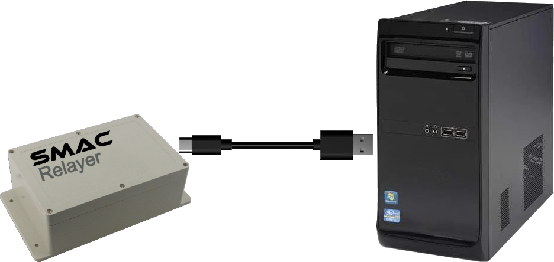
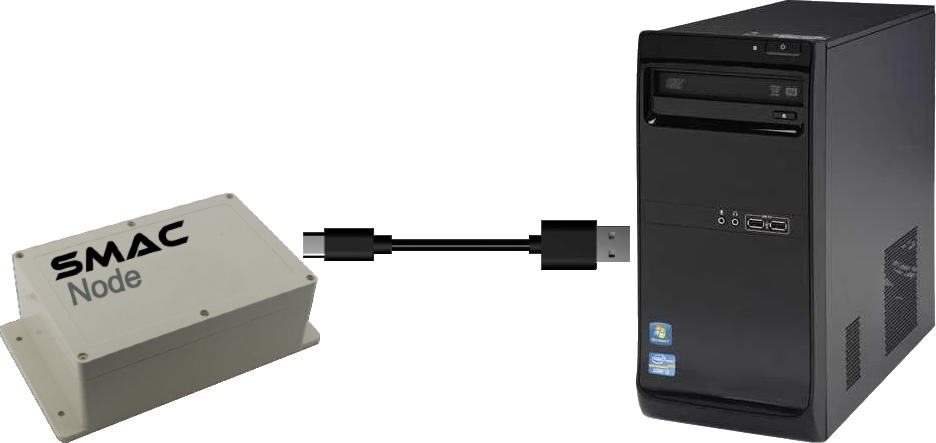

This browser does not support serial communications.
Please use the Chrome or Edge browser.
In a SMAC System, Remote Modules (Nodes)
communicate with the Relayer Module using direct WiFi.
To do this, each Node requires the Relayer's MAC address.
This tool stores the Relayer's MAC address in the Node.
Let's first get the Relayer's MAC address:
Using a USB cable, connect the Relayer
to this computer and click the button below.

The Relayer's MAC address is:
Now connect a Node to this
computer and click the button below.
You will need to do this for each Node
in your SMAC System.

Current Relayer MAC Address :
OR
Enter New MAC Address:
(XX:XX:XX:XX:XX:XX)
The new MAC Address has been set.
You may unplug the USB cable and use your Node normally.